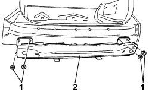

7210B82 R.R REAR CROSSMEMBER
- Path
- Procedures > 72 PANELS AND FRAMES > 7210 REMOVING-REFITTING > 7210B STRUCTURAL ELEMENTS (CENTRE AND REAR SECTION) > 7210B82 R.R REAR CROSSMEMBER
- Kind
- repair procedure (removal / refitting; the operation number is the code)
- Applies to
- all engines; all production periods
- Interactive page
- https://sloeber94.github.io/elrnDB-fCrm/en/#/194001238
Applies to: all engines; all production periods
 Removing
Removing
 Refitting
Refitting- Turn the ignition key to the OFF position.
- Open the bonnet.
- Disconnect the negative battery terminal.
Description | Connector | |
|---|---|---|
BATTERY |
- Position the vehicle on the lift and raise it.
(both)
Op. 5540A56 EXTERIOR REAR LIGHT (ONE), LEFT OR RIGHT - R.R.
Op. 4450B13 REAR WHEELS (TWO) - R.R
Op. 7040B22 LUGGAGE COMPARTMENT/LOAD PLATFORM MOULDING - R+R
Op. 7040B26 LOAD PLATFORM COVER BLIND - R+R
Op. 7040B42 PROTECTION GRILLE FOR ANIMAL TRANSPORT - R and R
(both)
Op. 7040G46 LOAD COMPARTMENT COURTESY LIGHT - R and R
(both)
Op. 7050A47 SIDE PANEL ONE OF REAR SEAT SQUAB LH OR RH R R
Op. 7040B24 LOAD COMPARTMENT TOP TRIM (ONE) - R+R
Op. 7040B10 LOAD PLATFORM (LUGGAGE PLATFORM) TRIM - R+R
Op. 7040B18 LOAD COMPARTMENT LOAD PLATFORM SIDE TRIM ONE LH OR RH - R.R
Op. 5570T95 SUBWOOFER WITH AMPLIFIER BUILT INTO SOUND SYSTEM - R.R.
1. Unscrew the nuts securing the rear sacrificial beam.
2. Remove the rear sacrificial beam.

Applies to: all engines; all production periods
Refitting
Removing- Check that the rear sacrificial beam is not damaged.
- Position the beam in its seat and tighten the nuts to secure it to the body.
Component | Fastening | dia | Value (daNm) | Validity |
|---|---|---|---|---|
CRASH BOX CROSSMEMBER TO FRONT CROSSMEMBER | Bolt | M6 | 0,64 ÷ 0,96 |
Op. 5570T95 SUBWOOFER WITH AMPLIFIER BUILT INTO SOUND SYSTEM - R.R.
(both)
Op. 7040B18 LOAD COMPARTMENT LOAD PLATFORM SIDE TRIM ONE LH OR RH - R.R
Op. 7040B10 LOAD PLATFORM (LUGGAGE PLATFORM) TRIM - R+R
(both)
Op. 7040B24 LOAD COMPARTMENT TOP TRIM (ONE) - R+R
(both)
Op. 7050A47 SIDE PANEL ONE OF REAR SEAT SQUAB LH OR RH R R
(both)
Op. 7040G46 LOAD COMPARTMENT COURTESY LIGHT - R and R
Op. 7040B42 PROTECTION GRILLE FOR ANIMAL TRANSPORT - R and R
Op. 7040B26 LOAD PLATFORM COVER BLIND - R+R
Op. 7040B22 LUGGAGE COMPARTMENT/LOAD PLATFORM MOULDING - R+R
Op. 4450B13 REAR WHEELS (TWO) - R.R
(both)
Op. 5540A56 EXTERIOR REAR LIGHT (ONE), LEFT OR RIGHT - R.R.
- Connect the negative battery terminal.
Description | Connector | |
|---|---|---|
BATTERY |
Topics linked from this page (15)
- 4450B13 REAR WHEELS (TWO) - R.R
- 5540A56 EXTERIOR REAR LIGHT (ONE), LEFT OR RIGHT - R.R.
- 5570 ACCESSORIES
- 5570T95 SUBWOOFER WITH AMPLIFIER BUILT INTO SOUND SYSTEM - R.R.
- 5580C AIR BAG SYSTEM
- 7040B10 LOAD PLATFORM (LUGGAGE PLATFORM) TRIM - R+R
- 7040B18 LOAD COMPARTMENT LOAD PLATFORM SIDE TRIM ONE LH OR RH - R.R
- 7040B22 LUGGAGE COMPARTMENT/LOAD PLATFORM MOULDING - R+R
- 7040B24 LOAD COMPARTMENT TOP TRIM (ONE) - R+R
- 7040B26 LOAD PLATFORM COVER BLIND - R+R
- 7040B42 <x>PROTECTION GRILLE FOR ANIMAL TRANSPORT - R&R</x>
- 7040G46 <x>LOAD COMPARTMENT COURTESY LIGHT - R&R</x>
- 7050A47 SIDE PANEL ONE OF REAR SEAT SQUAB LH OR RH R R
- 7210E66 R.R. REAR BUMPER
- A001 BATTERY